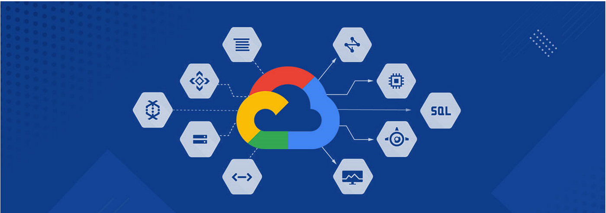

Overview of Cloud Providers for AI
Introduction
Major cloud providers offer end-to-end platforms for Artificial Intelligence and Machine Learning.
They combine scalable infrastructure, managed ML services, and pre-trained AI APIs to simplify building intelligent applications.
Understanding these platforms helps students map theory to real-world AI systems.
1️⃣ Amazon Web Services (AWS)
AWS provides a comprehensive AI and ML ecosystem with deep service coverage.
It supports model training, deployment, and ready-to-use AI services.
AWS is known for flexibility, scalability, and enterprise adoption.
Key AI Services:
• Amazon SageMaker (ML platform)
• Rekognition (Vision AI)
• Comprehend (NLP)
• Bedrock (Generative AI)
📘 Exam Line: AWS provides scalable AI and ML services through managed cloud platforms.
2️⃣ Microsoft Azure
Azure tightly integrates AI services with enterprise tools and Microsoft products.
It supports end-to-end ML lifecycle management.
Azure is widely used in corporate and hybrid environments.
Key AI Services:
• Azure Machine Learning
• Cognitive Services (Vision, Speech, NLP)
• Azure OpenAI Service
📘 Exam Line: Azure provides enterprise-ready AI services integrated with Microsoft ecosystems.
3️⃣ Google Cloud Platform (GCP)
GCP is strong in data analytics and AI research-driven services.
It offers advanced ML tools with a focus on automation.
GCP is known for performance and innovation in AI.
Key AI Services:
• Vertex AI
• Vision AI & Natural Language AI
• Gemini (Generative AI)
📘 Exam Line: GCP provides data-centric AI services with advanced machine learning capabilities.

Quick Comparison (Exam Ready)
| Provider |
AI Strength |
Key Platform |
| AWS |
Wide service portfolio |
SageMaker |
| Azure |
Enterprise integration |
Azure ML |
| GCP |
Data & research focus |
Vertex AI |
Check Your Understanding
1. Which cloud provider is best known for enterprise integration?
Microsoft Azure.
2. Which service is AWS’s core ML platform?
Amazon SageMaker.
3. Which provider excels in data analytics and AI research?
Google Cloud Platform.
4. Which providers offer Generative AI services?
All three: AWS (Bedrock), Azure (OpenAI), GCP (Gemini).
5. Why do cloud platforms simplify AI adoption?
They provide scalable infrastructure and managed AI services.
Final Takeaway
AWS, Azure, and GCP each provide powerful AI platforms with unique strengths.
AWS focuses on flexibility and service breadth, Azure excels in enterprise integration, and GCP leads in data-driven AI.
Understanding these providers helps students choose the right platform for real-world AI applications and exams.